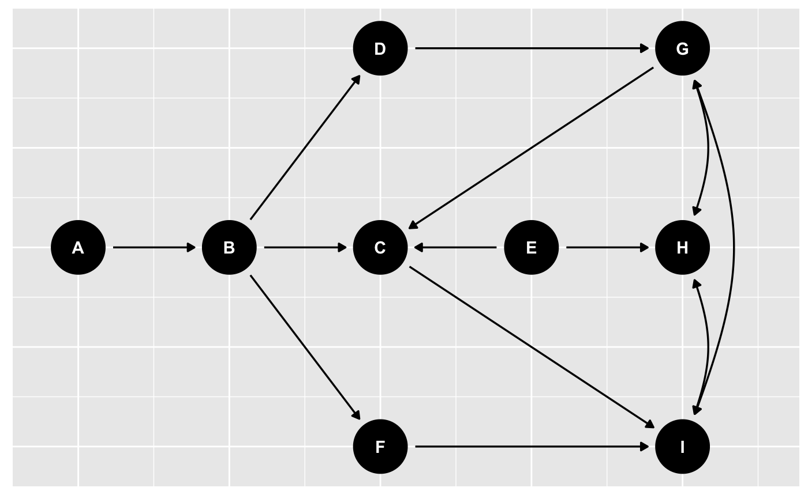
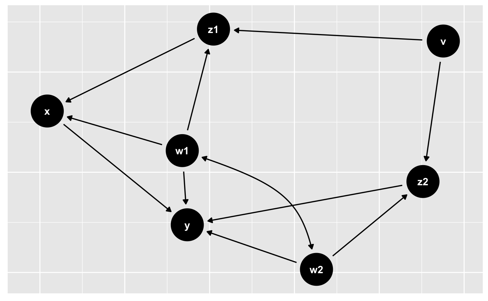

dagify() creates dagitty DAGs using a more R-like syntax. It currently
accepts formulas in the usual R style, e.g. y ~ x + z, which gets
translated to y <- {x z}, as well as using a double tilde (~~) to
graph bidirected variables, e.g. x1 ~~ x2 is translated to x1 <-> x2.
dagify(..., exposure = NULL, outcome = NULL, latent = NULL, labels = NULL, coords = NULL)
| ... | formulas, which are converted to |
|---|---|
| exposure | a character vector for the exposure (must be a variable name in the DAG) |
| outcome | a character vector for the outcome (must be a variable name in the DAG) |
| latent | a character vector for any latent variables (must be a variable name in the DAG) |
| labels | a named character vector, labels for variables in the DAG |
| coords | coordinates for the DAG nodes. Can be a named list or a
|
a dagitty DAG
dagify(y ~ x + z, x~ z)#> [1] "dag {\nx\ny\nz\nx -> y\nz -> x\nz -> y\n}\n" #> attr(,"class") #> [1] "dagitty"coords <- list( x = c(A = 1, B = 2, D = 3, C = 3, F = 3, E = 4, G = 5, H = 5, I = 5), y = c(A = 0, B = 0, D = 1, C = 0, F = -1, E = 0, G = 1, H = 0, I = -1) ) dag <- dagify(G ~~ H, G ~~ I, I ~~ G, H ~~ I, D ~ B, C ~ B, I ~ C + F, F ~ B, B ~ A, H ~ E, C ~ E + G, G ~ D, coords = coords) dagitty::is.dagitty(dag)#> [1] TRUEggdag(dag)dag2 <- dagify(y ~ x + z2 + w2 + w1, x ~ z1 + w1, z1 ~ w1 + v, z2 ~ w2 + v, w1 ~~ w2, exposure = "x", outcome = "y") ggdag(dag2)